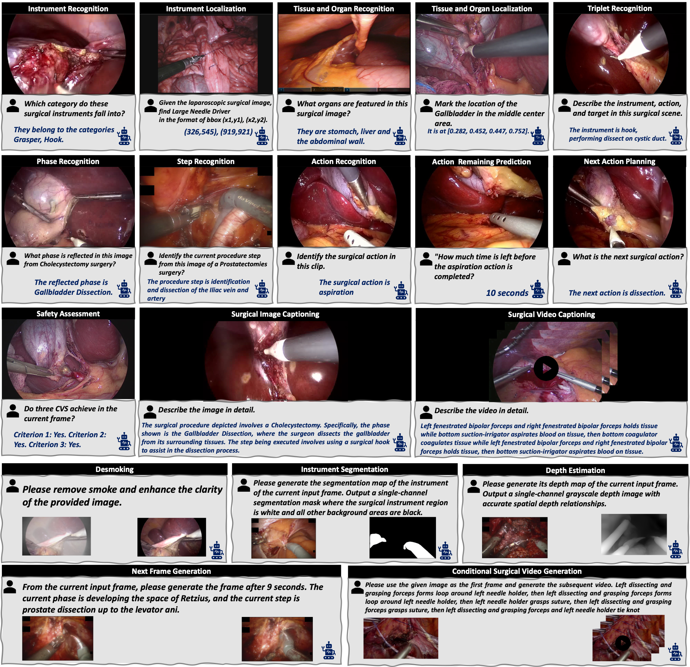
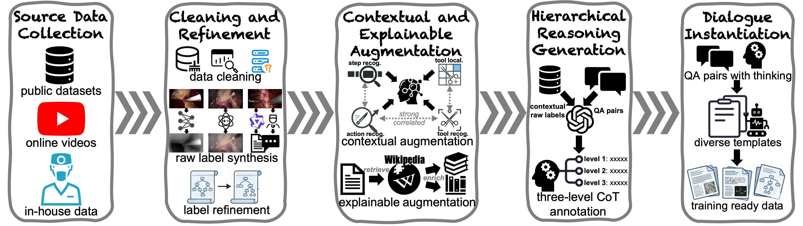

SurgΣ: A Spectrum of Large-Scale Multimodal Data and Foundation Models for Surgical Intelligence
Abstract
Surgical intelligence has the potential to improve the safety and consistency of surgical care, yet most existing surgical AI frameworks remain task-specific and struggle to generalize across procedures and institutions. Although multimodal foundation models, particularly multimodal large language models, have demonstrated strong cross-task capabilities across various medical domains, their advancement in surgery remains constrained by the lack of large-scale, systematically curated multimodal data. To address this challenge, we introduce SurgΣ, a spectrum of large-scale multimodal data and foundation models for surgical intelligence. At the core of this framework lies SurgΣ-DB, a large-scale multimodal data foundation designed to support diverse surgical tasks. SurgΣ-DB consolidates heterogeneous surgical data sources (including open-source datasets, curated in-house clinical collections and web-source data) into a unified schema, aiming to improve label consistency and data standardization across heterogeneous datasets. SurgΣ-DB spans 6 clinical specialties and diverse surgical types, providing rich image- and video-level annotations across 18 practical surgical tasks covering understanding, reasoning, planning, and generation, at an unprecedented scale (over 5.98M conversations). Beyond conventional multimodal conversations, SurgΣ-DB incorporates hierarchical reasoning annotations, providing richer semantic cues to support deeper contextual understanding in complex surgical scenarios. We further provide empirical evidence through recently developed surgical foundation models built upon SurgΣ-DB, illustrating the practical benefits of large-scale multimodal annotations, unified semantic design, and structured reasoning annotations for improving cross-task generalization and interpretability.
Examples of Tasks in SurgΣ-DB

Overview of the Data Curation and Annotation Pipeline

BibTeX
@article{zeng2026surgsigma,
title={Surg$\Sigma$: A Spectrum of Large-Scale Multimodal Data and Foundation Models for Surgical Intelligence},
author={Zhitao Zeng and Mengya Xu and Jian Jiang and Pengfei Guo and Yunqiu Xu and Zhu Zhuo and Chang Han Low and Yufan He and Dong Yang and Chenxi Lin and Yiming Gu and Jiaxin Guo and Yutong Ban and Daguang Xu and Qi Dou and Yueming Jin},
journal={arXiv preprint arXiv:2603.16822},
year={2026}
}